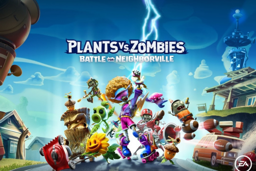

-
FIFA 20 Legacy Edition (Switch) Review
SPORT
The lack of additions to FIFA 20 Legacy Edition outside of its new, more honest name, and its refusal
to innovate either on or off the pitch are disappointing, even borderline insulting.
-

Call of Duty: Modern Warfare - Single-player Review
SHOOTING
Call of Duty: Modern Warfare is the best CoD campaign in nearly a decade, thanks to fast pacing and great variety.
-

Plants vs Zombies: Battle for Neighborville Review
SHOOTING
Messy maps and repetitive solo campaigns are rescued by an exciting and cute roster and varied multiplayer modes.
-

Sekiro: Shadows Die Twice Review
ACTION
Sekiro: Shadows Die Twice is a stylish, focused stealth-action take on the FromSoftware formula that's something amazing all its own.
-

GEARS
SHOOTING
ears 5 managed to pleasantly surprise me,
both in terms of its gameplay and its story.
For a series that’s now six total entries deep,
that’s impressive. The Coalition pulled it off by taking
the time to develop its trio of young heroes beyond the foundations
established in Gears of War 4 and having the guts to alter the course of
the series in a way I didn’t expect.
-

Borderlands: Game of The Year Edition Review
ACTION/SHOOTING
With its distinctive hand-drawn cartoon art style,
Borderlands is an odd candidate for a remaster because it’s look is frankly hard to improve upon.
-

Marvel's Spider-Man PS4 Review
ACTION/ADVENTURE
Messy maps and repetitive solo campaigns are
rescued by an exciting and cute roster and varied multiplayer modes.
-

Assasin's creed Chronicles
SCI FI/ADVENTURE
The Assassin’s Creed Chronicles saga brings the thrill
of being a Master Assassin to 2.5D with standalone side-scroller gameplay. In each episode, players
journey to distinct civilizations and time periods.
-

Super Smash Bros
Sport/ADVENTURE
as series director Masahiro Sakurai said himself, it’s a miracle Super Smash Bros. Ultimate exists. Having Mario and Zelda duke it out against Street Fighter’s Ryu and Final Fantasy 7’s Cloud on a battlefield from Metal Gear Solid is a weird, wonderful thing that only the Smash Bros. series can deliver – and Ultimate
is undoubtedly Smash Bros.
-

crash bandicoot N.Triology
ADVENTURE
the incredible visual and aural overhaul and the gameplay tweaks to earlier entries, like time trials and crate counters, that
Naughty Dog added later in the series. Those additions make the overall package so much more cohesive while
never forgetting what made, and what still makes, so much of Naughty Dog’s original trilogy a blast to play.